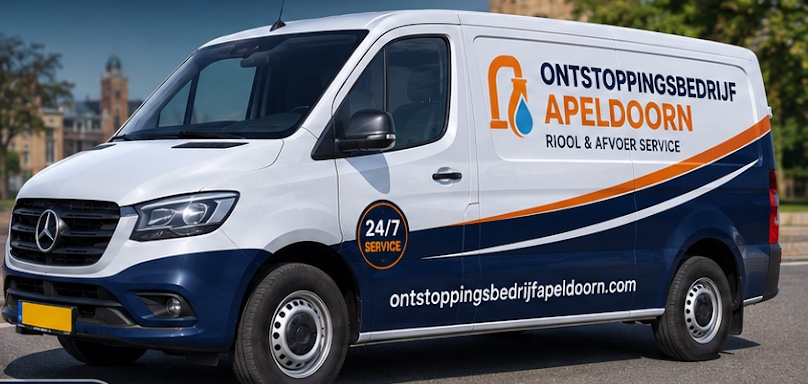

Loopt het niet meer weg?
Verstopte afvoer, wc, gootsteen, douche of riool in Apeldoorn en omgeving. Bel ons, dag en nacht. Je hoort vooraf wat het ongeveer kost en betaalt na afloop gewoon met pin.
Bel direct, ook 's nachts en in het weekend 055 569 00 06
Het Rietveld 55A, Apeldoorn. Wij rijden uit door Apeldoorn en omgeving.
Herken je dit?
Een verstopping kondigt zich meestal aan. Vet, zeepresten, haren, etensresten en kalk vormen samen een taaie prop diep in de leiding. Wachten maakt het vaak erger, niet beter.
-
Keuken
Water blijft staan in de gootsteen
Vetresten in de keukenafvoer zijn de bekendste oorzaak. Het water zakt steeds trager weg.
-
Badkamer
De douche loopt vol, het putje borrelt
Haren en zeep hopen zich op in de doucheput of wastafel. Borrelende geluiden zijn een teken.
-
Toilet
De wc zakt niet weg of loopt over
Dan zit het vaak dieper dan de pot. Doortrekken maakt het dan alleen maar erger.
-
Riool
Stank en terugkomend vuil water
Bij een verstopte hoofdleiding spelen soms wortelgroei of verzakking. Dat zoeken we uit.
Geen giswerk. Zo pakken we een verstopping aan.
-
1
Opsporen
We luisteren naar je verhaal en zoeken uit waar de verstopping precies zit. Waar nodig met een camera, zodat je ziet wat er in de leiding speelt.
-
2
Ontstoppen
Met een ontstoppingsveer of hogedrukreiniging maken we de leiding vrij en spoelen we hem schoon, zonder onnodige schade.
-
3
Controleren
We kijken of het water weer krachtig en vrij wegstroomt, en vertellen je hoe je een volgende verstopping voorkomt.
Wordt het straks duurder dan verwacht?
Die vraag snappen we. Daarom beginnen we pas als jij weet waar je aan toe bent.
- Prijsindicatie vooraf
- Je hoort wat er nodig is, welke aanpak we kiezen en waarom. Geen verrassingen achteraf.
- Pinnen op locatie
- Na afloop betaal je ter plekke met pin of kaart. Geen gezoek naar contant geld.
- Dag en nacht bereikbaar
- 's Avonds, in het weekend of op een feestdag: een verstopping houdt zich niet aan kantooruren, wij ook niet.
- Lokaal in Apeldoorn
- We zitten aan Het Rietveld en kennen de regio, dus we kunnen snel schakelen. Voor woningen en bedrijfspanden.
Wat klanten zeggen
4,8
18 reviews op Google
"De service stopte niet bij vertrek want hij volgde het probleem de volgende dag nog op."
"hele betrouwbare loodgieter kwam netjes op tijd voor de afvoer verstopping en loste het snel op zou ik zeker weer bellen"
"bedankt voor de cv leiding reparatie alles duidelijk uitgelegt en snel gemaakt ben erg tevrede."
"Geen krassen of beschadigingen aan het schilderwerk tijdens de werkzaamheden gelukkig."
"hij zei dit stuk werkt nog prima dus niet kopen joh beetje rommel achtergelaten maar goed advies"
Vaak gevraagd
- Kunnen jullie met spoed komen?
- Ja. We zijn 24 uur per dag, 7 dagen per week bereikbaar, ook 's nachts, in het weekend en op feestdagen. Bel 055 569 00 06.
- Wat kost een ontstopping?
- Dat hangt af van waar de verstopping zit en hoe hardnekkig die is. Je krijgt vooraf een duidelijke prijsindicatie en we beginnen pas als jij akkoord bent.
- Kan ik met pin betalen?
- Ja, je betaalt na de werkzaamheden ter plaatse met pin of kaart.
- Doen jullie ook ander loodgieterswerk?
- Ja, naast verstoppingen helpen we bij lekkages, rioolproblemen en andere sanitaire storingen, voor woningen en bedrijfspanden.
- Hoe weet ik of mijn riool verstopt is?
- Let op water dat traag wegloopt, borrelende geluiden, vuil water dat terugkomt en rioollucht in huis. Twijfel je, bel dan even.
Spoed? Bel. Geen spoed? Stuur een bericht.
055 569 00 06- Adres
- Het Rietveld 55A
7321 CT Apeldoorn - Bereikbaar
- Maandag tot en met zondag, 24 uur per dag
- Werkgebied
- Apeldoorn en omgeving